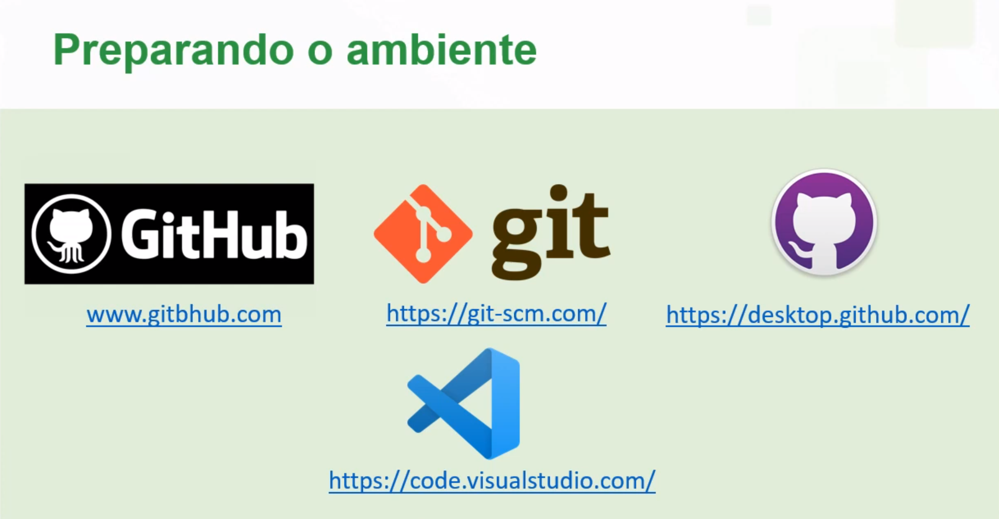

- É um sistema que tem por objetivo realizar controle de versões de um código ou documento.
- E por ele é possível gerenciar as versões de um código ou documento realizadas por um desenvolvedor ou equipe de desenvolvedores.
- Para acontecer a mágia do controle de versões é necessário um software que cria primeiramento um Repositório Local onde é feito a partir do arquivo escolhido um Histórico de Versões [Log] (v1,v2,v3...).
- Há também a possibilidade de criar um Repositório Remoto usado principalmente em Trabalhos em Equipe, com os arquivos em nuvem a acessibilidade é maior assim como a segurança. A sincronização ﾠé uma das melhores ferramentas presentes nesse modelo de repositório.

-
Existe uma versão corrente que possui todas as versões do arquivo, que é distribuida para todos os usuários. Podendo assim existir um controle sobre as modificações.
-
Aumentando assim, a produtividade e gerando uma maior certeza de que não haverão percas de versões (alterações ou exclusões acidentais).

ﾠCENTRALIZADO
- Possui um repositório central em um servidor com controle de versões, porém, se o servidor parar, o controle também para.
[Dependente do servidor] Ex: Apache Subversion.

ﾠDISTRIBUÍDO
- Possui um repositório local com controle de versões, Atualizações feitas no repositório central.
[Independente do servidor] Ex: Mercurial e Git.


- É um software livre de versionamento que surgiu para o desenvolvimento do Kernel do Linux, foi projetado e desenvolvido por Linus Torvalds em 2005
- Cada diretório de trabalho do Git é um repositório com um histórico completo e habilidade total de acompanhamento das revisões, não dependente de acesso a uma rede ou a um servidor central.
- Git = "cabeça dura" → gíria britânica.

- É uma plataforma de hospedagem de código-fonte e arquivos com controle de versão.
- Surgiu em 2008 e foi adquirido pela Microsoft em 2018 por US$ 7,5 bilhões.
- Hospedando atualmente aproximadamente 100 milhões de projetos e com 56 milhões de usuários.
- Git ≠ GitHub.
- GitHub = plataforma de hospedagem.
- Git = programa que faz o controle de versionamento.

- Usaremos os seguintes programas para um completo versionamento:

- [commit] torna permanente um conjunto de alterações em um repositório;
- [push] envia alterações para o servidor no repositório remoto;
- [fetch] verifica se o seu repositório local está em sincronia com o remoto;
- [pull] sincroniza o repositório local com o remoto atualizando as versões.

LINK PARA O MEU GITHUB
Clique aqui para voltar ao início